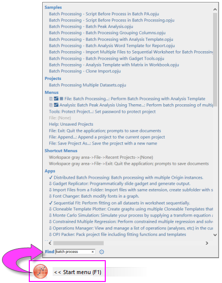
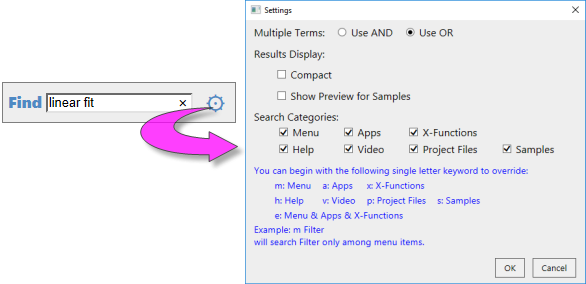
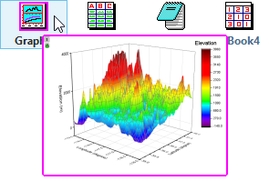
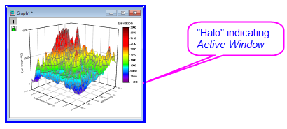

Die Origin-Oberfläche
Origin-Interface
Der Origin-Arbeitsbereich
Origin-Arbeitsbereich
Dieses Kapitel enthält grundlegende Informationen zum Navigieren im Origin-Arbeitsbereich. Versierte Origin-Anwender können dieses Kapitel überspringen.
 | Fenstergröße und -position werden im Arbeitsbereich automatisch angepasst, um die unterschiedlichen Anzeigen zu berücksichtigen. Dies soll dem Wechsel zwischen Ihrem Laptop und einem Monitor mit höherer Auflösung Rechnung tragen, so dass Sie die Größe/Position jedes Fensters und Dialogs nicht mehr ändern müssen. Es gibt eine Systemvariable, die das Neuskalierungsverhalten steuert: @SRWS (0 = vorheriges Verhalten; 1 = Breite anpassen, Y skalieren; 2 = Höhe anpassen, X skalieren; 3 (Standard) = Breite und Höhe anpassen). |
Vorschau des Windows File Explorer
Auch wenn er kein Teil der Origin-Bedienoberfläche ist, können Sie den Windows File Explorer (zuvor "Windows Explorer") verwenden, um Diagramme in einer Projektdatei als Vorschau anzuzeigen.

- Die großen bzw. extragroßen Symbole des Windows Explorer (klicken Sie mit der rechten Maustaste auf den Datei-Explorer und wählen Sie Ansicht: Große Symbole bzw. Extragroße Symbole oder im Explorer-Menü Ansicht) zeigen ein Bild des letzten aktiven Diagramms, bevor die Projektdatei gespeichert wurde.
- Öffnen Sie das Vorschaufeld (ALT + P) und scrollen Sie durch alle Diagramme in der Projektdatei.
- Wenn Sie NICHT möchten, dass Diagrammvorschauen in der Datei gespeichert werden (entweder in der Symbolansicht oder im Vorschaufeld des Explorers), dann können Sie die LabTalk-Systemvariable @PESS = 0 oder = -1 setzen. Informationen zum Ändern des Wert einer Systemvariablen finden Sie unter FAQ-708 Wie ändere ich permanent den Wert einer Systemvariablen?.
Menüs und Menübefehle in Origin
Menüs
- Kontextsensitivität der Menüleiste und Menüs: Die Menüleiste und die Menübefehle sind kontextsensitiv; sie ändern sich mit dem Fenstertyp (von Arbeitsblatt in Diagramm zu Matrix beispielsweise). Nur die zu dem aktiven Fenster zugehörigen Menüs werden angezeigt.
- Menü-Bitmaps, Symbolleistenschaltflächen und Tastenkombinationen: Einige Menübefehle haben Bitmaps, die links von dem Befehl angezeigt werden. Zusätzlich wird zuweilen eine Tastenkombination rechts von einem Menübefehl angezeigt. Die Schaltflächen-Bitmap und die Tastenkombinationen sind alternative Möglichkeiten für den Zugriff auf die gleiche Funktionalität.
- Kontextmenübefehle: Viele Befehle sind auch in den Kontextmenüs verfügbar. Um ein Kontextmenü zu öffnen, klicken Sie mit der rechten Maustaste auf ein Origin-Objekt (Arbeitsblattfenster, Diagrammachse, Textobjekt etc.). Es werden nur die zugehörigen Menübefehle gezeigt.
- Minimierbare Menüs: Minimierbare MenüsVollständige MenüsStandard ist der minimierte Zustand von Haupt- und Kontextmenüs in Origin, d.h., es werden nur ein paar Befehle angezeigt. Wenn Sie ein Menüelement verwenden, das nicht in dem Menü enthalten ist, wird es zu dem Menü hinzugefügt. Wenn Sie es vorziehen, immer die gesamten Menüs zu sehen, klicken Sie auf Einstellungen: Optionen > Sonstiges und deaktivieren Sie das Kontrollkästchen Minimierbare Menüs aktivieren.
- Am häufigsten verwendete Menübefehle der Analyse: Die zuletzt verwendeten Menübefehle werden unten in den Analysemenüs angezeigt (Worksheet, Analyse, Statistik, Bild etc.). Dies ermöglicht Ihnen einen schnellen Zugriff auf Hilfsmittel für wiederkehrende Operationen.
- Am häufigsten zuletzt verwendete Dateien: Mehrere Untermenüs für Datei (z. B. Datei: Zuletzt verwendete Projekte) bewahren eine Liste der am häufigsten zuletzt geöffneten oder gespeicherten Dateien. Auf diese Weise können Sie Dateien, an denen Sie aktuell arbeiten, einfach finden und öffnen.
- Menü benutzerdefiniert anpassen: Seit Origin 8.1 können Origin-Anwender ihre Menüs benutzerdefiniert anpassen Menüs, anpassen, indem Sie Menüelemente hinzufügen oder entfernen. Weitere Informationen erhalten Sie in dem Kapitel Origin benutzerdefiniert anpassen in diesem Handbuch.
| Es gibt ein Klartextprotokoll mit den gesamten Aktivitäten der Origin-Dateien hinzu. Die Datei hat den Namen "OriginProjHistory.txt" und wird in den Anwenderdateien gespeichert (Hilfe: Ordner öffnen: Anwenderordner). Die maximale Anzahl der Einträge wird durch die Systemvariable @MHF (Standard = 1000) gesteuert. |
Symbolleisten in Origin
Symbolleiste, benutzerdefiniert anpassen
Mit Hilfe des Dialogs Anpassen (Ansicht: Symbolleisten) können Sie die Anzeige der Symbolleisten steuern und zurücksetzen sowie Symbolleisten neu initialisieren.
- Anzeige der Symbolleisten benutzerdefiniert anpassen: Verwenden Sie die Bedienelemente auf der Registerkarte Optionen im Dialog Anpassen, um das Aussehen von Schaltflächen und Symbolleisten zu modifizieren.
- Symbolleiste andocken/frei bewegen: Symbolleisten können aus dem Bereich der Symbolleisten gezogen werden und sind dann im Arbeitsbereich frei verschiebbar. Um eine Symbolleiste zu verschieben, führen Sie die Maus über die linke Kante der Symbolleiste. Wenn der Cursor ein vierfacher Pfeil wird, ziehen Sie die Symbolleiste aus dem Symbolleistenbereich. Um die Symbolleiste in ihre vorherige Position zurückzusetzen, klicken Sie doppelt auf die Titelleiste der Symbolleiste.
- Symbolleiste verbergen/zeigen: Wenn Sie auf die Schaltfläche Schließen auf einer frei beweglichen Symbolleiste klicken, wird die Symbolleiste aus der Ansicht entfernt. Um eine verborgene Symbolleiste wiederherzustellen, öffnen Sie den Dialog Anpassen und fügen Sie auf der Registerkarte Symbolleisten ein Häkchen neben der Symbolleiste hinzu.
- Schaltfläche verbergen/zeigen: Klicken Sie auf einen kleinen Pfeil am rechten Ende einer Symbolleiste und öffnen Sie ein Ausklappmenü, um Schaltflächen auf Symbolleisten zu aktivieren/deaktivieren.
- Schaltfläche verschieben/verbergen: Drücken Sie die Alt-Taste und ziehen Sie an einer Schaltfläche, um sie in eine neue Position zu verschieben, innerhalb einer oder zwischen den Symbolleisten. Drücken Sie die Alt-Taste und ziehen Sie die Schaltfläche auf eine leere Stelle im Arbeitsbereich, um eine neue Symbolleiste zu erstellen. Oder verbergen Sie eine Schaltfläche, indem Sie die Alt-Taste drücken und die Schaltfläche in ein Unterfenster ziehen (keinen leeren Arbeitsbereich!). Wenn die Schaltfläche als "X" angezeigt wird, lassen Sie los, um die Schaltfläche auf der Symbolleiste zu verbergen.

Weitere Informationen zum benutzerdefinierten Anpassen von Origins Standardsymbolleisten, siehe Symbolleisten und Schaltflächen benutzerdefiniert anpassen weiter hinten im diesem Handbuch.
Minisymbolleisten
OriginLab verbessert die Minisymbolleisten für häufig verwendete Objekte und Aufgaben kontinuierlich . Diese Symbolleisten werden angezeigt, wenn die Anwender ein Objekt auswählen oder wenn sie in bestimmte Schlüsselbereiche innerhalb der Seite klicken. Verfügbare Bedienelemente hängen vom Kontext ab (ausgewähltes Objekt, Fenstertyp etc.).
- Stellen Sie vor Verwendung der Minisymbolleisten sicher, dass sich neben Ansicht: Minisymbolleisten (Standard) ein Häkchen befindet.
- Um die Symbolleiste anzuzeigen, wählen Sie ein Objekt wie eine Datenzeichnung, eine Textbeschriftung oder eine Arbeitsblattzelle.
- Es gibt zusätzlich Symbolleisten für allgemeinere Anpassungen auf Seiten- und Layerebene. Diese Symbolleisten werden durch Bewegen der Maus in Randnähe des Fensters angezeigt. Wenn Sie sehen, dass sich Ihr Mauscursor in etwas wie
 verwandelt, ist dies Ihr Zeichen dafür, dass ein Klick auf diesen Punkt eine Minisymbolleiste der relevanten Hilfsmittel anzeigt.
verwandelt, ist dies Ihr Zeichen dafür, dass ein Klick auf diesen Punkt eine Minisymbolleiste der relevanten Hilfsmittel anzeigt.

- Die meisten Minisymbolleisten haben eine Schaltfläche Eigenschaften
 , die Zugriff auf komplexere Einstellungen gewährt (z. B. den Dialog Details Zeichnung des Diagrammfensters).
, die Zugriff auf komplexere Einstellungen gewährt (z. B. den Dialog Details Zeichnung des Diagrammfensters).
- Wenn Sie den Cursor wegbewegen oder nicht schnell genug handeln, wird eine Minisymbolleiste wieder ausgeblendet. Um eine Minisymbolleiste nach dem Ausblenden wiederherzustellen, drücken Sie die Shift-Taste.
- Um Schaltflächen zu einer Minisymbolleiste hinzuzufügen oder aus ihr zu entfernen, klicken Sie auf die drei Punkte unten in der Mitte der Symbolleiste. Der Dialog Minisymbolleiste benutzterdefiniert anpassen wird geöffnet, in dem Sie Schaltfläche nach Bedarf aktivieren bzw. deaktivieren können.
Startmenü
Geben Sie Stichwörter und Phrasen in das Feld Suchen ein, um relevante Menüeinträge, Apps, FAQ, Videos und X-Funktionen anzuzeigen. Öffnen Sie zuletzt geöffnete Dateien, Menüs und Apps.
Öffnen Sie das Startmenü, indem Sie (1) F1 drücken (wenn keine anderen Dialoge offen sind), (2) auf das Suchsymbol mit der Lupe unten links im Origin-Arbeitsbereich klicken oder (3) im Hauptmenü auf Hilfe: Startmenü aktivieren wählen.
- 
Um Ihre Suche zu verfeinern, geben Sie die folgenden Buchstaben vor den Suchbegriffen ein:
m = Sucht nur Menüeinträge
a = Sucht nur Apps
h = Sucht nur Hilfethemen + FAQs
v = Sucht nur Videos
x = Sucht nur X-Funktionen
p = Sucht nur zuletzt verwendete Projekte
s = Sucht nur Beispielprojekte
e = Sucht nur Menüs + Apps + X-Funktionen (nur ausführbar)
Alternativ:
Klicken Sie auf das Symbol neben dem Suchfeld, um die Einstellungen zu öffnen. Hier können SIe die Suchergebnisse einschränken und andere Sucheinstellungen verändern.
- 
Lernzentrum
Das Lernzentrum ist ein Dialog, der beim Start von Origin angezeigt wird und dazu dienen soll, Ihnen einen schnellen Zugriff auf Diagramm- und Analysebeispiele zu gewähren. Ergänzt wird das durch verschiedene Lernressourcen (Tutorials, Videos, den OriginLab Blog etc.).
- Um den Dialog zu öffnen, wählen Sie Hilfe: Lernzentrum oder drücken Sie F11.
- Aktivieren oder deaktivieren Sie das Kontrollkästchen Bei Start zeigen, um diesen Dialog jedes Mal zu zeigen, wenn Origin geöffnet wird.
- Zeigen und laden Sie Beispieldiagramme, einschließlich Beispieldaten und Hinweise, zum erneuten Erstellen des Diagramms.
- Laden Sie Analysebeispiele mit Daten.
- Navigieren Sie über die Registerkarte Lernressourcen zu Tutorials und Videos und Links zum Origin Blog, Anwenderforum und Seiten der sozialen Medien von Origin.
- Verschieben Sie Dateien aus Ihrem vorherigen Anwenderdateiordner in Ihren neuen Anwenderdateiordner.
| Um die neuen Diagramme in Origin 2023 zu sehen, öffnen Sie das Lernzentrum, klicken Sie auf die Registerkarte Diagrammbeispiele, setzen Sie den Diagrammfilter der Auswahlliste auf Alle Diagrammtypen und suchen Sie nach 2023. |
Projekt Explorer
Der Projekt Explorer ist ein Hilfsmittel, das Sie dabei unterstützt, die Inhalte Ihrer Origin-Projektdateien (OPJ) zu verwalten.

Der Projekt Explorer besteht aus zwei Bedienfeldern. Das erste Bedienfeld zeigt die Ordnerstruktur der Projektdatei (OPJ). Das Unterbedienfeld zeigt Fenster, die in dem Ordner enthalten sind, der im Hauptbedienfeld markiert ist.
| Vor 2018 listete das untere Bedienfeld die Unterordner in dem Ordner auf, der im oberen Bedienfeld ausgewählt war. Um diesen Anzeigemodus wiederherzustellen, setzen Sie den Wert der Systemvariable @PEF = 1. |
Projekt Explorer zum Verwalten Ihrer Projekte verwenden
- Klicken Sie mit der rechten Maustaste auf die Titelleiste des Projekt Explorers oder klicken Sie auf die Auswahlliste, um die Bedienfelder gestapelt anzuzeigen (Vertikale Ausrichtung) oder nebeneinander (Horizontale Ausrichtung).
- Kontextmenüs in beiden Bedienfeldern bieten Optionen zum Löschen, Verbergen, Drucken etc. Menüoptionen variieren abhängig davon, was ausgewählt ist bzw. auf welche Stelle Sie mit der rechten Maustaste geklickt haben.
- Die Auswahl von mehreren Fenstern im untergeordneten Bedienfeld wird unterstützt (halten Sie Shift oder Strg gedrückt, während Sie mit der Maus Ihre Auswahl treffen).
- Das untergeordnete Bedienfeld unterstützt unterschiedliche Ansichten der Fenster: Details (Standard), Liste, Kleine Symbole, Große Symbole, Extragroße Symbole.
- In jeder Ansicht wird durch Bewegen der Maus über ein Fenstersymbol eine Popup-Vorschau des Diagramms, des Arbeitsblatt, der Matrix oder des Layoutfensters gezeigt. Der Inhalt des Notizfensters wird in einem Tooltipp gezeigt.
| Um die Vorschauen des Projekt Explorers zu deaktivieren, setzen Sie den Wert der Systemvariablen @PEF = 1. |
- Steuern Sie die Anzeige der Vorschauen per Rechtsklick auf das Unterbedienfeld und setzen Sie ein Häkchen neben Strg-Taste für Vorschauanzeige gedrückt halten. Ab nun werden Popups nur angezeigt, wenn Sie die Strg-Taste drücken.
- Wenn Sie die Fenster mit extragroßen Symbolen anzeigen, zeigt das Unterbedienfeld des Projekt Explorers eine Miniaturbild der Diagramme, Layoutfenster, Arbeits- und Matrixmappen. Der Inhalt des Notizfensters wird in einem Tooltipp gezeigt.
- Sie können mit der rechten Maustaste auf einen PE-Ordner (oberes Bedienfeld) klicken und Kopieren wählen -- oder Sie markieren den Ordner und drücken Strg + C und Strg + V --, um Ordnerstruktur und -inhalt zu kopieren und (a) in einen anderen Ordner im aktuellen Projekt oder (b) in ein anderes Projekt, das in einer zweiten Origin-Sitzung ausgeführt wird, einzufügen. Zum Kopieren eines einzelnen Arbeitsmappenfensters klicken Sie mit der rechten Maustaste auf das Fenster (unteres Bedienfeld) und kopieren und fügen Sie das Fenster ein: (a) in einen anderen Ordner im gleichen Projekt oder (b) in ein neues Projekt, das in einer zweiten Origin-Sitzung ausgeführt wird.
 |
- Wählen Sie Hilfe: Ordner öffnen: Programmordner und klicken Sie auf den Unterordner Samples. Ziehen Sie dann die Datei Tutorial Data.opj in Ihren Origin-Arbeitsbereich.
- Standardmäßig ist der Projekt Explorer am linken Rand des Origin-Arbeitsbereichs im Modus Automatisch verbergen angedockt. Bewegen Sie Ihre Maus über die Registerkarte des Projekt Explorers, um das zugehörige Fenster des Projekt Explorers anzuzeigen.
- Klicken Sie auf das Symbol der "Stecknadel" auf der Titelleiste des Projekt Explorers, um das Fenster in der angedockten Position zu befestigen.
- Standard des untergeordneten Bedienfelds ist die Ansicht Details. In dieser Ansicht werden die Fenstermetadaten wie Name, Größe und Kommentare unter den entsprechenden Spaltenüberschriften gezeigt. Ziehen Sie jetzt an den Spaltenköpfen, um sie neu zu ordnen.
- Klicken Sie mit rechten Maustaste auf die Spaltenüberschriften und zeigen bzw. verbergen Sie sie, indem Sie das Kontrollkästchen neben der jeweiligen Überschrift aktivieren bzw. deaktivieren.

- Um einen Kommentar im Feld Kommentare hinzuzufügen, klicken Sie einmal, machen Sie eine kurze Pause und klicken Sie ein zweites Mal. So gelangen Sie in den Bearbeitungsmodus. Geben Sie einen Kommentar ein.
-
- Um den Namen eines Fensters zu sehen, klicken Sie mit der rechten Maustaste auf die Zeile und wählen Sie Umbenennen. Standard ist, dass das Feld Name den Kurznamen des Fensters anzeigt oder, falls ein Fensterlangname existiert den Langnamen (alle Fenster müssen einen Kurznamen haben; Langnamen sind optional). Klicken Sie auf die Schaltfläche SN oder LN rechts von dem bearbeitbaren Feld Name, um den Kurz- oder Langnamen zu bearbeiten. Wenn der Langname nicht existiert, können Sie einen eingeben.
- Scrollen Sie im oberen Bedienfeld des Projekt Explorers zum Ordner 3D Surface with Point Label und klicken Sie auf ihn. Das Unterbedienfeld zeigt, dass es drei Fenster im Ordner gibt. Beachten Sie, dass das Arbeitsblattfenster eastcali3053 fett ist und damit anzeigt, dass es das aktive Fenster ist - das Fenster, mit dem gearbeitet wird und das bestimmt, welche Operationen verfügbar sind. Es gibt auch ein Notizfenster und ein Matrixfenster mit dem Namen MBook4.
- Klicken Sie im Unterbedienfeld doppelt auf MBook4 und beachten Sie, dass es jetzt fett ist und einen magentafarbenen "Halo" um sich herum hat, ein Kennzeichen dafür, dass es sich um das aktive Fenster handelt. Sie sehen auch, dass das gesamte Fenster (im Arbeitsbereich) mit einem Halo angezeigt wird, der farblich mit Hilfe der Systemvariablen @AWC angepasst werden kann -- ein weiterer Hinweis darauf, dass dies das "aktive" Fenster ist. Klicken Sie erneut doppelt auf das Symbol MBook4 und beachten Sie, dass das Symbol jetzt gedimmt ist. Beachten Sie auch, dass das tatsächliche Fenster aus dem Arbeitsbereich verschwindet. Dies liegt daran, weil MBook4 jetzt verborgen ist. Klicken Sie erneut doppelt auf das Symbol MBook4. Das Fenster wird wiederhergestellt und aktiviert.
- Klicken Sie bei aktivem MBook4 auf Zeichnen > 3D: Oberfläche: 3D-Farbabbildung. Auf diese Weise wird ein 3D-Oberflächendiagramm mit Farbabbildung erstellt (schließen Sie die Warnmeldung). Beachten Sie auch, dass ein neues Fenster -- Graph1 -- zum Unterbedienfeld des Projekt Explorers hinzugefügt wurde .
- Klicken Sie mit der rechten Maustaste auf einen leeren Teil des Unterbedienfeld und wählen Sie Ansicht: Extra große Symbole. Beachten Sie, dass Graph1 jetzt als Miniaturbild des Diagramms angezeigt wird.
- Klicken Sie erneut mit der rechten Maustaste und wählen Sie Ansicht: Große Symbole. Beachten Sie, dass Fenster jetzt durch Symbole dargestellt werden. Wenn Sie jedoch mit der Maus über sie fahren, wird Ihnen der Fensterinhalt als Popup angezeigt.
- 
|
Ordnernotizen
Sie können Ordnernotizen zu einem Ordner im Projekt Explorer hinzufügen.
- Klicken Sie mit der rechten Maustaste auf einen Ordner und wählen Sie Ordnernotizen.
- Wenn kein Ordner Kommentar existiert, werden ein leeres Fenster für die Ordnernotizen zum Ordner hinzugefügt (siehe auf dieser Seite Optionen zum Hinzufügen und Anzeigen des Notizfensterinhalts).
- Falls es einen Kommentar gibt (Hinweis: Klicken Sie mit der rechten Maustaste auf den Ordner und wählen Sie Eigenschaften.) wird durch Hinzufügen von Ordnernotizen der Kommentar in das Fenster der Ordnernotizen kopiert.
- Beim Wechseln zwischen Ordnern wie zum Beispiel mit der neuen Symbolleiste Ordner und Fenster werden diese Ordnernotizen immer im Arbeitsbereich angezeigt, unabhängig davon, ob sie verankert oder minimiert sind.
- Wenn Sie die Ordnernotizen schließen (d. h. durch Klicken auf die Schaltfläche Schließen
 ), werden Sie im Ordner eingebettet und erst dann wieder angezeigt, wenn Sie mit der rechten Maustaste auf den Ordner im PE klicken und Ordnernotizen wählen.
), werden Sie im Ordner eingebettet und erst dann wieder angezeigt, wenn Sie mit der rechten Maustaste auf den Ordner im PE klicken und Ordnernotizen wählen.
Zusätzlich:
- Drücken Sie die Strg-Taste und bewegen Sie Ihre Maus über einen Ordner im Projekt Explorer, um den gerenderten Inhalt des Notizfensters zu sehen.
- Die Systemvariable @FNS wurde hinzugefügt, um zu bestimmen, welche Syntax der Stand für die Ordnernotizen sein soll (= 0 (Text), = 1 (HTML), = 2 (Markdown), or = 3 Origin Rich Text (Standard)).
- Es wurde eine Minisymbolleiste hinzugefügt mit Ordnernotizen, Duplikatsordner und Dialog Ordnereigenschaften öffnen.
Symbolleiste Ordner und Fenster
| Eine neue Symbolleiste Ordner und Fenster wurde hinzugefügt, um mit Ordnern und Ordnerinhalt des Projekt Explorers zu arbeiten. Bei der ersten Ausführung von Origin 2023 sehen Sie eventuell diese neue Symbolleiste "frei beweglich" im Origin-Arbeitsbereich. Sie können sie (an der Titelleiste) zu einem leeren Bereich der Symbolleistenfläche ziehen. Oder Sie können Ansicht: Symbolleisten wählen und auf die Schaltfläche Erneut initialisieren klicken, um die Symbolleisten auf die Standardkonfiguration zurückzusetzen.
|
Die Symbolleiste Ordner und Fenster macht es einfacher, zwischen den Ordnern des Projekt Explorers (PE) zu wechseln (Zurück zum vorherigen Ordner) oder das aktive Fenster als einen Shortcut in den vorherigen Ordner einzufügen. Außerdem kann das aktive Fenster über Fenster: Fenster anordnen: <Zuletzt verwendet> verankert oder die Fenster im aktiven Ordner angeordnet werden.
- Ordner zurück: Vom aktuellen Ordner zum vorherigen Ordner zurückkehren.
- Ordner weiter: Vom vorherigen Ordner zum aktuellen Ordner zurückkehren.
- Zurück zum vorherigen Ordner: Zwischen den beiden Orderner hin- und herwechseln (Strg + Alt + X). Im Menü Fenster: Zurück zum vorherigen Ordner.
- Shortcut des aktiven Fensters für Zurück zum vorherigen Ordner hinzufügen: Das aktive Fenster mit dem vorherigen Ordner als Shortcut teilen (Strg + Shift +F7). Alternativ klicken Sie mit der rechten Maustaste auf den Fenstertitel und fügen einen Shortcut zum vorherigen Ordner hinzu.
- Shortcuts von vorherigem Ordner hinzufügen: Shortcuts nach Fenstertyp zum aktuellen Ordner hinzufügen.
- Fenster anordnen (zuletzt verwendet): Wie Fenster: Fenster anordnen <Zuletzt verwendet>.
- Aktives Fenster verankern: Fenster verankern, so dass es nicht eingeschlossen ist, wenn auf Fenster anordnen (Zuletzt verwendet) geklickt wird. Alternativ klicken Sie mit der rechten Maustaste auf den Fenstertitel und verankern Sie das Fenster (oder lösen Sie es).
Fenster-Shortcuts
Wenn Si in einem Ordner der Projekt Explorer sind, können Sie mit der Maus über einen anderen Ordner fahren, mit der rechten Maustaste klicken und Shortcuts hinzufügen. Ein Dialog zum Hinzufügen von Fenstern als Shortcuts nach Typ wird zum aktiven Ordner hinzugefügt.
-

- Wenn ein Shortcutfenster zum aktiven Ordner hinzugefügt wurde, wird eine Home-Schaltfläche angezeigt ("Zum ursprünglichen Ordner wechseln") . Das Klicken auf die Schaltfläche navigiert zum (und aktiviert) das ursprüngliche Fenster in dem Ordner, in dem es sich befindet.
- Ein Shortcutfenster zeigt den Namen des Ordners im PE in Klammern auf der Fenstertitelleiste an.
- Wenn Sie auf Schließen
 in einem Shortcutfenster klicken, wird der Shortcut im aktuellen Ordner verborgen.
in einem Shortcutfenster klicken, wird der Shortcut im aktuellen Ordner verborgen.
- Um Shortcuts aus dem aktiven Ordner zu entfernen, klicken Sie mit der rechten Maustaste auf den Ordner im Projekt Explorer und entfernen Sie die Shortcuts (abgeblendet, wenn es keine zu entfernenden Shortycuts gibt).
- Minimierte oder maximierte Fenster, die als Shortcuts hinzugefügt worden sind, werden oben oder unten wiederhergestellt, so dass sie sichtbar sind, aber nicht den Arbeitsbereich füllen.
App-Center und App-Galerie
Apps-Galerie Apps sind benutzerdefinierte Add-On-Applikationen für Origin, die spezifische Aufgaben der grafischen Darstellung und/oder Analyse durchführen. Ein kleine Anzahl von Apps, die verbreitet Anwendung in Wissenschaft und Ingenieurwesen finden, ist auf Ihrer Origin-Software vorinstalliert.
Verwenden Sie den Dialog App-Center zum Durchsuchen, Aktualisieren bzw. Herunterladen von Origin-Apps. Dieser neue Dialog gestattet direkten Zugriff auf die Apps im Dateiaustausch von OriginLab, ohne dass Sie einen Browser öffnen müssen.
Um das App-Center zu öffnen, klicken Sie auf die Schaltfläche Apps hinzufügen, die auf allen Registerkarten der Apps-Galerie angezeigt wird. Die Apps-Galerie befindet sich am rechten Rand des Origin-Arbeitsbereichs. Falls Sie die Apps-Galerie nicht sehen, klicken Sie auf Ansicht: Apps (oder ALT + 9) und überprüfen Sie, ob sich ein Häkchen neben Apps befindet.
- Installierte und aktuelle Apps werden im App-Center mit einem grünen Häkchen angezeigt.

- Installierte Apps, für die es eine neuere Version gibt, werden mit einem Update-Symbol neben ihnen angezeigt.

- Die nicht installierten Apps werden mit dem Symbol Download und Installation angezeigt.

Origins Menüs Statistik, Analyse: Anpassen und Analyse: Peaks und Basislinie enthalten den Eintrag Apps suchen. Durch Klicken auf Apps suchen wird das App-Center aufgerufen, das nur die Apps zeigt, die für das aktuelle Menü (z. B. Statistik) relevant sind. Sie können Apps direkt vom App-Center aus herunterladen und aktualisieren.
Verwenden Sie die App-Galerie, um Ihre installierten Apps zu organisieren und auf sie zuzugreifen.
| Neue Apps und Updates von Apps werden kontinuierlich für Anwender von Origin und OriginPro bereit gestellt. Öffnen Sie Ihr App-Center gelegentlich (dazu drücken Sie die Taste F10). Falls die rote Schaltfläche Jetzt herunterladen (Download Now) angezeigt wird, klicken Sie auf die aktuelle Liste der verfügbaren Apps.

|
Weitere Informationen zu Apps finden Sie unter www.originlab.com/apps.
Objektverwaltung
Objektverwaltung Die Objektverwaltung ist ein andockbares Bedienfeld, das standardmäßig auf der rechten Seite des Arbeitsbereichs geöffnet wird. Verwenden Sie die Objektverwaltung zur schnellen Bearbeitung des aktiven Diagramm- oder Arbeitsmappenfensters.
fenster rückgängig machen
- Wählen Sie ein Element (Layer, Zeichnungsgruppe, Datenzeichnung oder spezieller Punkt) in der Objektverwaltung, um das entsprechende Element in dem Diagrammfenster auszuwählen und umgekehrt. Die Auswahl (a) blendet alle anderen Zeichnungen in dem Diagrammlayer ab und (b) wählt die Quelldaten im Arbeitsblatt.
- Die Objektverwaltung verfügt nun über die Ansichten "Diagrammobjekte" und "Zeichnungen" für Diagrammfenster. Klicken Sie mit der rechten Maustaste auf einen leeren Bereich der Objektverwaltung und wählen Sie Zeichnungen zeigen/Diagrammobjekte zeigen oder drücken Sie Strg + Shift + S, um zwischen den zwei Ansichten zu wechseln.
- Verbergen oder zeigen Sie Zeichnungen oder Diagrammobjekte, indem Sie das entsprechende Kontrollkästchen in der Objektverwaltung deaktivieren bzw. aktivieren.
- Ändern Sie auf Grafikebene die Listenreihenfolge der Objektverwaltung (Zeichenreihenfolge oder die Umkehrung -- Reihenfolge des Auftretens).
- Sie können die Layerreihenfolge auf Layerebene ändern.
- Sie können auf Zeichnungsebene Beschriftungen zeigen, Zeichnungen zeigen/verbergen, Zeichnungen neu ordnen oder Zeichnungsgruppen erstellen.
- Innerhalb einer Zeichnungsgruppe (bezeichnet als gN) können Sie die Gruppierung aufheben, die Reihenfolge der Zeichnungen durch Ziehen oder mittels des Kontextmenüs neu ordnen, den Diagrammtyp ändern.
- Sie können eine Zeichnung (permanent) aus dem Diagrammfenster entfernen.
- Auf die Dialoge Details Zeichnung, Layerinhalt und Diagrammeinstellungen zugreifen
- Klicken Sie mit der rechten Maustaste auf das Layersymbol und wählen Sie Zeichnungsreihenfolge umkehren.
Arbeitsmappen- oder Matrixfenster
Die Objektverwaltung unterstützt auch bestimmte Aktionen für Arbeitsmappen und Matrizen:
- Es werden alle Blätter in der aktiven Arbeitsmappe oder Matrix aufgelistet.
- Wählen Sie schnell mehrere Blätter aus, indem Sie die Tasten STRG + Pfeil nach oben/unten drücken.
- Klicken Sie auf ein Blatt in der Objektverwaltung, um das entsprechende Blatt in der Arbeitsmappe oder Matrix zu aktivieren.
- Klicken Sie mit der rechten Maustaste in die Objektverwaltung, um Zugriff auf die gängigen Arbeitsblattoperationen zu erhalten, einschließlich Löschen, Einfügen, Hinzufügen, Verschieben, Kopieren und Duplizieren.
- Klicken Sie zum Umbenennen mit der rechten Maustaste in der Objektverwaltung auf eine Matrix oder virtuelle Matrix.
Layoutfenster
Wenn eine Layoutseite aktiv ist, listet die Objektverwaltung jetzt die Objekte auf und lässt ihre Anordnung über Kontextmenübefehle zu.
- Alle Objekte, einschließlich hinzugefügter Diagramme, Tabellen und Textobjekte, werden nun in der Objektverwaltung aufgeführt.
- Objekte können verborgen oder gezeigt werden, indem die zugehörigen Kästchen aktiviert bzw. deaktiviert sind.
- Wählen Sie mehrere Objekte in der Objektverwaltung, klicken Sie dann mit der rechten Maustaste und richten Sie sie aus bzw. verteilen Sie sie mit Hilfe von Kontextmenübefehlen.
Origin-Unterfenster
Unterfenster
| Aktive Fenster -- das Fenster, in dem die Zeichen- und Analyseoperationen durchgeführt werden -- werden von einem farbigen Rahmen umgeben, um das aktive Fenster auffälliger zu machen. Sie können die Eigenschaften der Kennzeichnung des aktiven Fensters (Rahmenfarbe, Position des Rahmens, Stil der Rahmenlinie) mit "@ Systemvariablen" @AWC (Farbe) und @AWI (Stil) nach eigenen Geschmack anpassen.
- 
|
- Arbeitsmappen: Die Origin-Arbeitsmappe stellt einen Rahmen für das Importieren, Organisieren, Analysieren, Transformieren und Zeichnen Ihrer Daten zur Verfügung. Die mit Reitern ausgestattete Arbeitsmappe kann zwischen 1 Blatt und 1.024 Blätter enthalten. Jedes Blatt kann mehr als eine Million Zeilen und mehr als 65.000 Datenspalten enthalten. Zusätzlich zu Ihren Daten können Arbeitsmappenfenster Diagramme, Anmerkungen, spaltenbasierte Funktionen, Skripte und programmierbare Schaltflächenobjekte, LabTalk-Variablen sowie Importfilter enthalten.
- Matrixmappen: Wie das Arbeitsblatt ist das Matrixblatt ein Gitternetz aus Zellen, angeordnet in Zeilen und Spalten. Der Hauptunterschied liegt darin, dass im Arbeitsblatt jede Spalte ein Datensatz ist und jeder Datensatz so konfiguriert werden kann, dass er verschiedene Datentypen (Text, Text & numerisch, numerisch (doppelt), numerisch (Int) usw.) enthält. Die Matrix ist im Gegensatz dazu ein einzelner numerischer Datensatz aus Z-Werten, die in der XY-Ebene durch Indexnummern für Zeilen (Y) und Spalten (X) zueinander in Bezug gesetzt werden. Die Matrixmappe enthält zwischen 1 Blatt und 1.024 Blättern. Jedes Blatt kann mehrere Matrixobjekte enthalten (bis zu 65.504).
- Diagramme: Datenzeichnungen befinden sich primär in Diagrammfenstern. Origin unterstützt über 100 Diagrammtypen, die wegen ihrer guten Anwendbarkeit in verschiedenen technischen Bereichen ausgewählt wurden. Jedes Diagramm basiert auf einer in der Software enthaltenen, benutzerdefinierbaren Diagrammvorlage, die mit Ihren benutzerdefinierten Einstellungen gespeichert werden kann. Neben Zeichnungen kann das Diagramm auch Anmerkungen enthalten (Text und Zeichenobjekte) oder Schaltflächen, mit denen Sie eine benutzerdefinierte Routine zur grafischen Darstellung oder Analyse durchführen können. Diagrammfenster können in Arbeitsblattzellen eingefügt werden oder sich "frei" in Arbeitsblätter (außerhalb des Gitternetzes) in einem Arbeitsmappenfenster bewegen.
- Bilder: Das Bildfenster ist ein Fenster zum Importieren, Anzeigen und Bearbeiten von Rasterbildern und Videos (.avi, .mov, .mp4).
- Funktionsdiagramme: Das Funktionsdiagramm ist ein spezialisiertes Diagrammfenster, das eine durch eine Funktion beschriebene Kurve anzeigt. Das Funktionsdiagramm unterscheidet sich von anderen Origin-Diagrammen dadurch, dass es nicht auf Grundlage eines Datensatzes mit diskreten Werten erstellt wurde (obwohl Sie nach dem Zeichnen Daten erzeugen können).
- Layoutseiten: Das Layoutfenster ermöglicht Ihnen die Kombination und Anordnung von Diagramm- und Arbeitsblattfenstern und verschiedenen Anmerkungen in einer einzigen "Darstellungsebene". Es wird in erster Linie zur Erstellung von Präsentationen verwendet.
- Excel-Arbeitsmappen Excel-Arbeitsmappen können in Origin geöffnet oder erstellt werden. Arbeitsmappen können separat oder als Teil Ihrer Origin-Projektdatei gespeichert werden.Excel
- Hinweise: Das Notizfenster unterstützt Klartext, Rich Text, HTML und Markdown. Verwenden Sie es für einfache Aufgaben wie das Aufzeichnen von Analyseverfahren, das Erstellen von Notizen für Studierende und Kollegen und das Ausschneiden und Einfügen von Text aus anderen Applikationen. Oder rendern Sie hochformatierten Text, einschließlich HTML-Berichte und mathematische Ausdrücke.
Um ein Origin-Unterfenster unabhängig von der Origin-Projektdatei zu speichern:
- Wählen Sie Datei: Fenster speichern unter..., um das aktive Fenster zu speichern. Die Dateierweiterungen OGW(U), OGG(U) und OGM(U) sind für Arbeitsmappen-, Diagramm- bzw. Matrixfenster von Origin.
- Klicken Sie mit der rechten Maustaste auf die Fenstertitelleiste und wählen Sie im Kontextmenü Speichern unter...
Hinweis: Um ein Excel-Fenster als externe Excel-Datei zu speichern, klicken Sie mit der rechten Maustaste auf die Titelleiste des Excel-Fensters in Origin und wählen Sie Arbeitsmappe speichern unter... im Kontextmenü.
| Origin 2018 fügte Unicode-Unterstützung (UTF-8) für Origin-Projekte, -Unterfenster und -Vorlagen hinzu. Wenn Sie eine Fensterdatei speichern -- mit Ausnahme der Projektdatei, die seit Origin 2023 nur Unicode-kompatibel (*.opju) gespeichert werden kann --, haben Sie die Option eine Datei mit oder ohne ein an den Dateityp (*.otp oder *.otpu) angehängtes "u" zu speichern. Wenn Sie beabsichtigen, die Datei nur in der neuesten Version von Origin zu verwenden, sollten Sie die Unicode-Option (angehängtes "u") verwenden, da sie einige Vorteile hinsichtlich der Performance zeigt. |
Um ein Arbeitsblatt, ein Diagramm, eine Matrix oder ein Notizfenster zu öffnen, das in einer Datei gespeichert wurde:
- Wählen Sie Datei: Öffnen oder klicken Sie auf die Schaltfläche Excel öffnen
 in der Symbolleiste Standard, um Fensterdateien zu öffnen.
in der Symbolleiste Standard, um Fensterdateien zu öffnen.
- Wählen Sie Datei: Zuletzt verwendete Mappen bzw. Datei: Zuletzt verwendete Diagramme, um zuletzt gespeicherte Dateien von Arbeitsmappen- und Diagrammfenstern zu öffnen.
Hinweis: Origin unterstützt Kurznamen, Langnamen und Kommentare für Fenster. Kurznamen müssen in einem Origin-Projekt einzigartig sein. Der Fensterkurzname wird umbenannt, wenn dieser Name bereits im Projekt existiert. Wenn Sie die Fensterdatei im aktuellen Projekt öffnen und das Projekt dann speichern, wird das Fenster im Projekt eingeschlossen.
Um eine Excel-Arbeitsmappe zu öffnen:
 | Wenn Sie beabsichtigen, mit Excel-Dateien in Origin zu arbeiten, lesen Sie bitte diesen Abschnitt der Origin-Hilfe, bevor Sie fortfahren.
|
- Wählen Sie im Menü Datei: Excel öffnen..., um eine externe Excel-Arbeitsmappe zu öffnen. Sie können auch auf die Schaltfläche Excel importieren auf der Symbolleiste Standard klicken oder Daten: Aus Datei importieren: Excel (XLS, XLSX, XLSM)... im Hauptmenü wählen, um die Excel-Datei zu importieren.
Hinweis: Wenn Sie Excel öffnen wählen, wird die Excel-Datei auch als Excel-Arbeitsmappe in einem Excel-Sitzung geöffnet, die in Origin ausgeführt wird. In diesem Modus haben Sie nur eingeschränkten Zugriff auf die Origin-Funktionen. Wenn Sie Daten: Mit Datei verbinden: Excel oder Daten: Aus Datei importieren: Excel wählen, wird die Excel-Datei in eine Origin-Arbeitsmappe importiert und alle Origin-Funktionen sind verfügbar.
Unterfenster anordnen
Origin fügt einige neue Hilfsmittel zum Anordnen von Fenstern hinzu, die über die grundlegenden Funktionalitäten Anordnen und Alle anordnen hinausgehen. Benutzer in der Industrie und Forschung, die mit Monitoren mit hoher Auflösung und vielen Fenstern arbeiten, sollten die Hilfsmittel hilfreich finden.
| - Die Symbolleiste Ordner und Fenster hat eine Schaltfläche Aktives Fenster verankern, die verwendet wird, um das aktive Fenster auszuschließen, wenn Fenster mit dem Menübefehl oder der Symbolleistenschaltfläche angeordnet werden. Durch Klicken auf diese Schaltfläche wird eine Schaltfläche zum Verankern zur Fenstertitelleiste hinzugefügt. Klicken Sie alternativ mit der rechten Maustaste auf ein beliebiges Fenster und wählen Sie im Kontextmenü Fenster verankern.
- Ab und zu entscheiden Sie sich eventuell -- nach Anordnen der Fenster --, ein Fenster für eine bessere Anzeige zu vergrößern. Sie können die vorherige Größe und Position des Fensters wiederherstellen, indem Sie auf Fenster: Fenstergröße wiederherstellen (Strg + Shift + Z) klicken.
|
Dialog Fenster anordnen
Zentral bei der Verwendung dieser Hilfsmittel ist der Dialog Fenster anordnen (winarrange) (Fenster: Fenster anordnen).
Verwenden Sie den Dialog, um Fenster im Origin-Arbeitsbereich zu sortieren und anzuordnen.
- Ordnen Sie die Fenster in Spalten an.
- Sortieren Sie nach Reihenfolge der Aktivierung, Reihenfolge des Projekt Explorers oder nach Fenstername (aufsteigend, absteigend).
- Sortieren Sie innerhalb des Fenstertyps.
- In horizontaler Richtung (links nach rechts) oder vertikaler Richtung (oben nach unten).
- Überlappen Sie jede Spalte (Kaskade) mit benutzerdefiniertem Versatz.
- Alle obigen Anordnungen enthalten können minimierte Fenster enthalten oder auch nicht.
Fenster ausrichten
Fenster, die in Zeilen und Spalten angeordnet werden, können ausgerichtet, d. h. "eingerastet" werden. Das heißt, Sie werden entlang einer gemeinsamen Kante gezogen und in ihrer Größe verändert. Das visuelle Kennzeichen zum Verwenden dieses "Einrastens" ist ein grüner Balken.
- Sie können diese Funktion ein- und ausschalten, indem Sie im Menü Fenster: Fenster ausrichten (Strg+F12) wählen.

- Um die Größe eines einzelnen Fensters ohne "Einrasten" zu verändern, drücken Sie die Shift-Taste, während Sie den Fensterrahmen ziehen.
- Wenn angeordnete Fenster den Arbeitsbereich abdecken, tauschen Sie zwei Fensterpositionen aus, indem Sie die ALT-Taste drücken, während Sie die Titelleiste des Fensters ziehen.
- Um ein Fenster in einem leeren Bereich auszurichten, drücken Sie während des Ziehens die Shift-Taste.
Unterfenster frei bewegen und verankern
Seit Origin 2023b können Unterfenster außerhalb des Origin-Arbeitsbereich als frei bewegliche Fenster verschoben werden. Diese Fenster verfügen über benutzerdefinierbare Menüs und Symbolleistenschaltflächen, so dass Sie nicht zum Hauptfenster von Origin zurückkehren müssen, um Zugriff auf sie zu haben.
Frei bewegliche Fenster werden automatisch verankert, so dass sie beim Wechseln von Ordnern im Projekt Explorer beibehalten werden.
Verankerte Fenster innerhalb von Origin werden beim Wechseln der Ordner im Projekt Explorer beibehalten. Um zum alten Verhalten zurückzukehren, setzen Sie die Systemvariable @pws = 0.
Das Befehlsfenster und Skriptfenster
Das Befehlsfenster kann verwendet werden, um LabTalk-Befehle an Origin zu geben, einfache mathematische Berechnungen auszuführen oder den Wert von LabTalk-Variablen zu prüfen. Das Befehlsfenster unterhält einen Befehlsverlauf mit Zeitstempel, der von Sitzung zu Sitzung mitgenommen werden kann, und verfügt über IntelliSense und damit über die Funktion der automatischen Vervollständigung beim Schreiben von X-Funktionsbefehlen. Das Befehlsfenster kann angedockt werden und hat zwei Bedienfelder. Der linke Bereich zeigt den Befehlsverlauf, während der rechte Bereich die Eingabe von Befehlen ermöglicht.
Das Skriptfenster ist älter als das Befehlsfenster. Es unterstützt nicht alle Funktionen des Befehlsfensters (es gibt keine Befehlsaufforderung und keinen scrollbaren Befehlsverlauf), aber es ist praktisch zum Ausführen von einfachen LabTalk-Befehlen beim Cursor (Ausführen mehrzeiliger Skripte durch Markieren des gesamten Skripts und Drücken von Enter). Das Menü Hilfsmittel des Fensters öffnet auch den Dialog LabTalk-Variablen und -Funktionen, in dem eine Liste der Origin-Variablen, -Funktionen, -Makros, ungebundenen Datensätze etc. angezeigt werden.
| Das Skriptfenster unterstützt auch Unicode, automatische Vervollständigung, Syntaxfärbung und Steuern/Zoom der Schriftgröße (Strg + Mausrad). Diese Funktionen sollten die Bedienbarkeit, insbesondere für 4K-Monitore, verbessern. Wenn Sie Skriptfenster mit "Klartext" möchten, setzen Sie @NSW = 0 (Hilfe zum Festlegen des Werts einer Systemvariable finden Sie in dieser FAQ). |
Um das Befehlsfenster zu öffnen:
- Klicken Sie die Schaltfläche Befehlsfenster
 in der Symbolleiste Standard. Alternativ können Sie im Menü Fenster: Befehlsfenster wählen oder ALT+3 drücken.
in der Symbolleiste Standard. Alternativ können Sie im Menü Fenster: Befehlsfenster wählen oder ALT+3 drücken.
Um das Skriptfenster zu öffnen:
- Wählen Sie im Menü Fenster: Skriptfenster oder drücken Sie SHIFT+ALT+3.
Die Formelleiste
Die Formelleiste ähnelt den Formelleisten in OpenOffice und Excel. Auch wenn es nicht erforderlich ist, die Formelleiste zu verwenden, um Zellenausdrücke einzugeben, bietet sie die Vorteile der Funktionssuche, der interaktiven Bereichsauswahl und der verbesserten Sichtbarkeit der Ausdrücke, insbesondere langer Ausdrücke, die die Zellenbreite überschreiten.

- Sie können die Formelleiste bei aktiver Arbeitsmappe ein- und ausschalten, indem Sie auf Ansicht: Formelleiste im Hauptmenü klicken.
- Um die Schriftgröße zu ändern, ändern Sie den Wert der LabTalk-Systemvariable @FBFS (Standardwert ist "130").
Weitere Informationen finden Sie im Kapitel Arbeitsmappen, Arbeitsblätter und Spalten.
| - Der Dialog Funktionen suchen, der im Menü Funktion in bestimmten Dialogen (z. B. Werte setzen) geöffnet wird, kann jetzt über das Menü Hilfsmittel: Funktionen suchen aufgerufen werden.
|
Die Statusleiste
Der Statusbalken Statusbalken befindet sich am unteren Rand des Origin-Arbeitsbereichs. Er zeigt mehrere Parameter an, einschließlich:
- Hilfemeldungen und Hilfsmittelbeschreibungen,
- Statistiken über die aktuelle Arbeitsmappen-, Matrix- oder Grafikauswahl,
- ob die Analysefunktion Automatisch aktualisieren eingeschaltet ist,
- ggf. den Namen des Systemdesigns,
- zugehörige Informationen zum aktiven Fenster,
- Winkeleinheiten (Radiant, Grad oder Gon),
- Tooltipps für Funktionen, die im Menü Werte setzen F(x) aufgelistet sind.
- Benachrichtigungen von OriginLab, dargestellt durch eine kleine rote Fahne rechts von der Statusleiste.

Daten der Statusleiste benutzerdefiniert anpassen und kopieren
- Sie können auswählen, was in der Statusleiste angezeigt wird, indem Sie mit der rechten Maustaste auf die Leiste klicken und dann die entsprechenden Elemente im Kontextmenü auswählen bzw. entfernen.
- Kopieren Sie die angezeigten statistischen Werte, indem Sie im Kontextmenü Statistik kopieren auswählen. Die kopierten Daten werden durch Tabs zwischen Menge und Werten getrennt, wobei jedes Schlüsselwertpaar von einem CRLF-Trennzeichen getrennt wird.
Praktische Hinweise
Hinweise, SoftwarePraktische Hinweise
Praktische Hinweise werden durch Benutzeraktivitäten ausgelöst und sollen ihm bei seiner aktuellen Aufgabe Unterstützung bieten. Diese Hinweise können kurz in einem Dialog angezeigt werden, wie im folgenden Beispiel zu sehen.
Alternativ können die Praktischen Hinweise auch in der untereren linken Ecke des Origin-Arbeitsbereichs abgebildet werden, wie dieses Beispiel zeigt.
Sobald Sie nicht mehr mit der Maus über den Hinweise fahren, wird er ausgeblendet. Sie können die Anzeige der einzelnen Praktischen Hinweise verhindern, indem Sie jeweils das Kontrollkästchen "Diese Meldung nicht mehr anzeigen." unterhalb eines Hinweises aktivieren.
Diese Hinweise werden für die aktuelle Sitzung protokolliert und können durch Klicken auf die Registerkarte Praktische Hinweise, die sich am Rand des Origin-Arbeitsbereichs befindet, angezeigt und nachgelesen werden (Beachten Sie, dass Hinweise im Dialog nicht protokolliert werden).
Um das Fenster des Meldungsprotokolls zu öffnen (zu schließen):
- Wählen Sie im Origin-Menü Ansicht: Praktische Hinweise oder drücken Sie ALT+7.
Klicken Sie mit der rechten Maustaste auf einen Hinweis im Protokoll der praktischen Hinweise und aktivieren Sie Diesen Hinweis nicht mehr anzeigen im Kontextmenü, um zu verhindern, dass dieser bestimmte praktische Hinweis erneut in der aktuellen Sitzung angezeigt wird. Sie werden gebeten zu bestätigen, dass diese Meldung nicht mehr gezeigt bzw. protokolliert werden soll.
Um die Anzeige der Praktischen Hinweise in der Sitzung zu deaktivieren, öffnen Sie das Skriptfenster und geben Sie Folgendes ein:
@SHS = 0;
Um die Anzeige der Praktischen Hinweise einzuschalten (einschließlich diejenigen, die einzeln verborgen wurden), geben Sie die Systemvariable @SHS = 1 ein und klicken Sie auf Hilfe: Alle Hinweise reaktivieren.
| Wenn Sie den Wert einer Systemvariablen mit Hilfe des Skriptfensters festlegen, ändern Sie das Verhalten Origins nur für die aktuelle Sitzung. Um den Wert einer Systemvariablen sitzungsübergreifend festzulegen, lesen Sie bitte diese FAQ. |
Code Builder
Origin C, IDE Die Integrierte Entwicklungsumgebung (IEU) wird als Code Builder bezeichnet. Der Code Builder stellt Hilfsmittel zum Schreiben, Kompilieren und Debuggen Ihrer Origin C-Funktionen bereit. Außerdem kann er zum Ausführen und Debuggen von Python-Code verwendet werden.
Um den Code Builder zu öffnen:
- Wählen Sie im Origin-Menü Ansicht: Code Builder oder klicken Sie auf die Schaltfläche Code Builder
 auf der Standardsymbolleiste oder drücken Sie ALT+4.
auf der Standardsymbolleiste oder drücken Sie ALT+4.
- Der Code Builder kann auch durch Klicken auf Konnektivität: untitled.py öffnen geöffnet werden. In diesem Modus können Sie den Python-Code durch Drücken von STRG + F5 einfügen und ausführen.
Meldungsprotokoll
Das Fenster Meldungsprotokoll zeigt Meldungen zu den Operationen, einschließlich Ausgabeinformationen, Ergebnissen und Fehlern. Es zeigt Meldungen an, die nicht zum Skriptfenster oder Befehlsfenster gesendet werden.
Um das Fenster des Meldungsprotokolls zu öffnen (zu schließen):
- Wählen Sie im Origin-Menü Ansicht: Meldungsprotokoll oder drücken Sie ALT+6.
Anklickbarer Link der Exportergebnisse
Exportdialoge (siehe Liste im Bild) fügen einen mit Datums-/Zeitstempel versehenen anklickbaren Link zum Meldungsprotokoll hinzu. Klicken Sie auf den Link, um die Datei mit der Standardanwendung (z. B. Notepad für *.dat) zu öffnen.

- Um den Dateispeicherort im Windows Explorer zu öffnen, ohne die Datei zu öffnen, klicken Sie mit der rechten Maustaste auf einen Link und wählen Sie Speicherort der Datei öffnen oder drücken Sie die Strg-Taste, während Sie auf den Link klicken.
- Zwei Systemvariablen werden hinzugefügt, um das Verhalten des Links für den Bildexport zu steuern. Weitere Informationen finden Sie unter Diagramme und Layoutseiten in eine Bilddatei exportieren.
Ergebnisfenster
Origin schreibt die meisten Analyse- und Anpassungsergebnisse automatisch in das Ergebnisfenster. Jeder Eintrag im Ergebnisfenster enthält eine Datums-/Zeitangabe, den Namen des Fensters, eine Zahlenangabe, die dem Julianischen Tag entspricht (siehe Datenangaben unten), dem verwendeten Analysetyp und den Ergebnissen.
In den meisten Fällen öffnet sich das Ergebnisfenster automatisch, sobald Ergebnisse dort hineingeschrieben werden. Sie können das Ergebnisfenster manuell öffnen (oder schließen), indem Sie einem der folgenden Schritte folgen:
- Klicken Sie auf die Schaltfläche Ergebnisfenster
 in der Symbolleiste Standard. Wählen Sie im Origin-Menü Ansicht: Ergebnisse oder drücken Sie ALT+2.
in der Symbolleiste Standard. Wählen Sie im Origin-Menü Ansicht: Ergebnisse oder drücken Sie ALT+2.
Wenn Sie mit der rechten Maustaste in das Ergebnisfenster klicken, wird ein Kontextmenü mit Befehlen zum Kopieren, Drucken, Entfernen und zum Anzeigen von Ergebnissen geöffnet.
Fenster frei bewegen, andocken und automatisch im Hintergrund verbergen
Fenster, andocken/frei bewegen/automatisch verbergen Es gibt mehrere Origin-Fenster, die entweder frei bewegt, angedockt oder automatisch im Hintergrund verborgen oder einfach verborgen werden können. Diese Fenster umfassen den Projekt Explorer, die Ergebnisse, das Befehlsfenster und das Meldungsprotokoll. Dies ermöglicht Ihnen, Ihren Origin-Arbeitsbereich auf eine Weise anzupassen, dass der Arbeitsbereich maximal effizient genutzt und Bildschirmplatz gespart wird.
Zahlen in Origin
Zahlen in Origin
- Angezeigter vs. tatsächlicher Zellenwert: Wenn Sie Ihre Daten in eine Arbeitsmappe oder Matrixmappe importieren oder eingeben, verwendet Origin eine Kombination von benutzerdefinierten Einstellungen, um die Anzeige der Daten in jeder Zelle zu bestimmen. Die Anzeige ist eine visuelle Darstellung des Datenwerts. Die tatsächlichen Datenwerte werden mit der vollständigen Genauigkeit, die von dem Datentyp des Datensatzes zugelassen wird (siehe Tabelle unten), gespeichert. Wenn Sie Berechnungen durchführen, werden die tatsächlichen Datenwerte verwendet und nicht die angezeigten.
- Wenn Inhalt Zellenbreite überschreitet: Vor 2020b, wenn die Zeichenabfolge in einer Blattzelle die Menge überschritten hat, die in der aktuellen Zellenbreite (Spaltenbreite) angezeigt werden konnte, zeigte Origin den Inhalt als eine Reihe von Rautezeichen an (######). Dies hat sich geändert in Anlehnung an das Arbeitsblattverhalten von MS Excel:
- Textzeichenketten zeigen nun keine Rautezeichen ###### mehr an, unabhängig von der Spaltenbreite. Um die vollständige Zeichenkette anzuzeigen, müssen Sie die Spaltenbreite vergrößern.
- Numerische Werte, die die Spaltenbreite überschreiten, werden zuerst auf die nächstliegende Dezimalstelle gerundet und, nur wenn dies nicht ausreicht, um die volle ganze Zahl anzuzeigen, werden Rautezeichen ###### anstelle vom numerischen Wert angezeigt.
- Dieses Runden der numerischen Werte hat nur Einfluss auf den angezeigten Wert. Der intern gespeicherte Wert ändert sich nicht.
- Um das alte Verhalten wiederherzustellen, bei die Rautezeichen ###### angezeigt wurde, wenn der Zelleninhalt nicht vollständig angezeigt werden konnte, setzen Sie die Systemvariable @WPE = 1. Eine Anleitung, wie Sie den Wert einer Systemvariablen ändern, finden Sie in dieser FAQ.
- Fehlende Werte in dem Arbeitsblatt: Als Tabellenkalkulationsprogramme zum ersten Mal aufkamen, konnte man bald feststellen, dass eine spezielle Zahl erforderlich war, die "Nicht-eine-Zahl" war und - wenn sie in einer Berechnung verwendet wurde - sich selbst erzeugte. Origin verfügt über so eine Zahl und ihr interner Wert ist:-1.23456789E-300. Da Origin diesen Wert als einen speziellen Wert erkannte, kann er verwendet werden, um einen fehlenden Wert in einem Arbeitsblatt (oder einer Matrix) einzugeben, und er kann in Berechnungen oder Skripten eingesetzt werden (zum Beispiel für die Rückgabe eines fehlenden Werts, es sei denn eine Bedingung wird erfüllt). Origin zeigt fehlende Werte in einem Arbeitsblatt oder Matrixblatt mit "--" an. Sie sollten diese Anzeige (Ausgabe) jedoch nicht damit verwechseln, was Sie selbst als fehlenden Wert eingeben (Eingabe).
- Dezimale, wissenschaftliche und technische Schreibweise: Sie können wählen, mit welcher Schreibweise Daten in der Arbeitsmappe bzw. Matrixmappe angezeigt werden soll: Dezimal:1000, Wissenschaftlich: 1E3, Technisch (Ingenieur): 1k und Dezimal:1.000. Sie können manuell eine dieser Optionen für die Datenanzeige wählen. Es ist außerdem möglich, dass Sie Schwellenwerte für die automatische Anzeige der wissenschaftlichen Schreibweise vordefinieren. Standardmäßig werden diese Schwellenwerte der wissenschaftlichen Schreibweise auf 6 (oberer Wert) und -3 (unterer Wert) gesetzt.
- Daten und Zeiten in Origin: Origins mathematisches Langzeitsystem für Datums- und Zeitangaben basiert auf den astronomischen Julianischen Tageszahlen mit einem 12-Stunden-Versatz. Dieses System definiert den 1. Januar –4712, (1. Januar 4713 v. u. Z.), 12 Uhr mitteleuropäische Greenwich-Zeit als Null. Seit Kurzem wurden zwei alternative Zeitsysteme hinzugefügt: (1) einen wahren Julianischen Datumswert (0 ist Mittag anstatt die folgende Mitternacht) und (2) ein "2018"-System, in dem 0 als 00:00 am 1. Januar 2018 definiert wird. Das 2018-System unterstützt eine größere Präzision, wenn z. B. Daten mit dem Importassistenten importiert werden (z. B. unterstützt Benutzerdefiniertes Datumsformat "MM'/'dd'/'yyyy HH':'mm':'ss'.'######"). Zuvor war die Präzision auf 0,0001 Sekunden beschränkt. Weitere Informationen finden Sie unter Daten und Zeiten in Origin.
| Hinweis: Weitere Informationen zu Zahlen finden Sie unter: Hilfe: Origin: Origin-Hilfe > Grundlagen von Origin > Elemente des Origin-Arbeitsbereichs > Zahlen in Origin
|
Origin-Arbeitsmappen und -Matrixmappen unterstützen die folgenden Datentypen:
| Arbeitsmappe |
Matrixmappe |
Bytes |
Wertebereich |
|
double
|
double
|
8
|
±1,7E±308 (15 Stellen)
|
|
real
|
float
|
4
|
±3,4E±38 (7 Stellen)
|
|
short
|
short
|
2
|
-32.768 bis 32.767
|
|
long
|
int
|
4
|
-2.147.483.648 bis 2.147.483.647
|
|
char
|
char
|
1
|
-128 bis 127
|
|
Byte
|
char, ohne Vorzeichen
|
1
|
0 bis 255
|
|
ushort
|
kurz, ohne Vorzeichen
|
2
|
0 bis 65.535
|
|
ulong
|
int, ohne Vorzeichen
|
4
|
0 bis 4.294.967.295
|
|
complex
|
complex
|
16
|
±1,7E±308 (15 Stellen), alle 8 Bytes
|
Weiterführende Themen